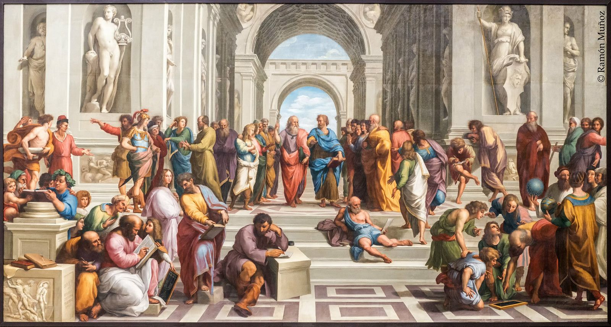

O que é a aritmética?
A aritmética é o ramo mais básico e fundamental da matemática, responsável pelo estudo dos números e das operações elementares: adição, subtração, multiplicação e divisão.
O termo “aritmética” vem do grego arithmos, que significa “número”, demonstrando sua relação direta com a ideia de quantificar e compreender o mundo ao redor.
Mais do que apenas realizar cálculos, a aritmética estabelece princípios e regras que permitem manipular quantidades de forma lógica e organizada, sendo a base para praticamente toda a matemática moderna.
Origem da aritmética
A aritmética não surgiu como uma invenção de uma única pessoa. Ela foi desenvolvida gradualmente ao longo de milhares de anos a partir das necessidades práticas da vida humana.

Antes mesmo da criação da escrita, aproximadamente antes de 3000 a.C., os seres humanos já precisavam:
- contar objetos;
- controlar alimentos;
- registrar trocas comerciais;
- acompanhar rebanhos.
Esse período inicial é conhecido como fase da contagem concreta, ocorrida aproximadamente entre 20.000 a.C. e 5.000 a.C.
Um dos registros mais antigos relacionados à contagem é o Osso de Ishango, datado de cerca de 20.000 a.C., encontrado na África e interpretado por muitos pesquisadores como um sistema primitivo de contagem.
Com o desenvolvimento das primeiras civilizações, como Egito e Babilônia (aproximadamente entre 3000 a.C. e 2000 a.C.), a aritmética começou a se estruturar de maneira mais organizada.
Nesse período ocorreram importantes avanços:
- criação de sistemas numéricos;
- desenvolvimento de métodos de cálculo;
- aplicações em comércio, agricultura e construção.
Mesmo assim, a aritmética ainda era utilizada principalmente de forma prática, sem uma teoria matemática formal.
Principais nomes da história da aritmética
A aritmética foi construída coletivamente por diferentes civilizações e matemáticos ao longo da história.
Entre os nomes mais importantes estão:
- Pitágoras (século VI a.C.) — estudou propriedades dos números e ajudou a desenvolver a teoria dos números;
- Euclides (século III a.C.) — organizou conceitos matemáticos de maneira lógica na obra Os Elementos;
- Brahmagupta (século VII d.C.) — estabeleceu regras matemáticas para o zero e os números negativos;
- Al-Khwarizmi (século IX d.C.) — sistematizou métodos de cálculo e contribuiu para a difusão do sistema numérico indo-arábico;
- Fibonacci (séculos XII–XIII) — ajudou a popularizar os números indo-arábicos na Europa.

Essas contribuições demonstram que a aritmética é resultado do desenvolvimento coletivo da humanidade.
A necessidade da aritmética
A aritmética surgiu da necessidade de resolver problemas reais do cotidiano. Um dos exemplos históricos mais conhecidos é o método utilizado por pastores para controlar seus rebanhos.
Durante o período neolítico, aproximadamente entre 10.000 a.C. e 3.000 a.C., muitos pastores utilizavam pedras para representar suas ovelhas:
- para cada ovelha que saía, colocava-se uma pedra;
- para cada ovelha que retornava, retirava-se uma pedra.
Ao final:
- se sobrassem pedras, faltavam ovelhas;
- se faltassem pedras, havia mais ovelhas do que o esperado.
Esse método representa um conceito fundamental da matemática chamado correspondência um a um, utilizado para relacionar quantidades.
Esse exemplo mostra que:
- a ideia de número surgiu antes dos símbolos escritos;
- a aritmética nasceu da necessidade de controle e organização;
- diferentes povos desenvolveram métodos semelhantes de forma independente.
Desenvolvimento histórico da aritmética
Ao longo da história, a aritmética passou por diversas transformações importantes:
-
Antiguidade (3000 a.C. – 500 a.C.)
- uso prático no Egito e na Babilônia;
- ausência de teoria formal.
-
Grécia Antiga (séculos VI a.C. – III a.C.)
- início da aritmética teórica;
- estudo das propriedades dos números.
-
Índia (séculos V – VII d.C.)
- desenvolvimento do sistema decimal;
- formalização do uso do zero.
-
Mundo Islâmico (séculos VIII – XII)
- organização dos métodos de cálculo;
- difusão do sistema numérico moderno.
-
Europa (séculos XII – XVI)
- popularização da aritmética;
- aplicações comerciais e científicas.
-
Era Moderna (séculos XVII – XIX)
- formalização dos números;
- desenvolvimento de bases teóricas.
-
Período Contemporâneo (século XX até hoje)
- aprofundamento lógico da matemática;
- aplicações em computação e tecnologia.
A aritmética na atualidade
Atualmente, a aritmética continua sendo essencial em diversas áreas da sociedade:
- educação básica;
- economia e finanças;
- engenharia;
- tecnologia e computação.
Grande parte das operações realizadas pelos computadores é baseada em princípios aritméticos, especialmente após o desenvolvimento da computação digital no século XX.
Impactos da aritmética na matemática moderna
A aritmética é considerada a base de toda a matemática moderna.
Desde o desenvolvimento da álgebra até os avanços da computação, seus princípios continuam fundamentais para o funcionamento da ciência e da tecnologia.
Sem a aritmética, não existiriam:
- algoritmos;
- sistemas digitais;
- computadores modernos;
- inteligência artificial.
Conclusão
A aritmética surgiu da necessidade humana de compreender, organizar e controlar quantidades, muito antes da criação da escrita.
Ao longo de milhares de anos, ela evoluiu desde métodos simples de contagem até sistemas matemáticos complexos utilizados atualmente em áreas como ciência, engenharia e computação.
Mais do que um conjunto de operações matemáticas, a aritmética representa uma das bases do desenvolvimento científico e tecnológico da humanidade.